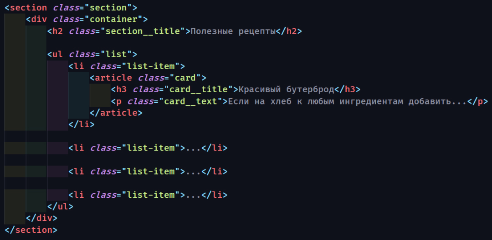
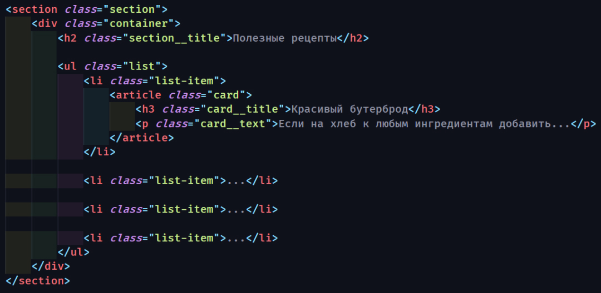

Отступ задается от предыдущего элемента к следующему: от первого ко второму, сверху вниз, слева направо.

ВАЖНО: margin всегда задают от предыдущего элемента к следующему.
Свойство margin необходимо только для того, чтобы отодвинуть своего соседа справа или снизу, поэтому используется margin-right и margin-bottom.
(!) Свойства margin-left и margin-top используются крайне редко.
Для padding верно обратное. Исключением является его применения в декоративных целях, например, для увеличения области ссылки.

Отступ внутри блока сверху или слева
реализуется через padding-top и padding-left родителя.
Отступы, как правило, делают в направлении от предыдущего элемента к следующему. Так элемент не будет толкать сам себя.
Изначально элемент статичен, а его положение может меняться только под воздействием
свойств других блоков или свойств родителя.


 
